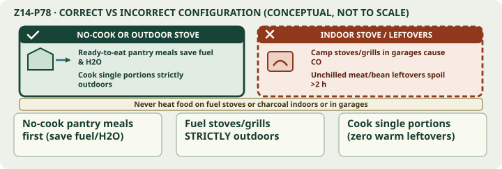

Z14-P78 · Food production and preservation · New manuscript
Prepare shelf-stable pantry meals safely during extended power outages
Feed the household safely with minimal water and zero indoor carbon monoxide or house-fire risk when electric stoves fail.
When it applies · Multi-day residential power outages with stocked shelf-stable pantry food.
Equipment · No-cook pantry staples, outdoor-only camp stove or charcoal grill (strictly outside ≥20 ft/open air), disposable plates, and safe potable water.

Actions
- Prioritize no-cook ready-to-eat pantry meals first (canned beans/chicken/tuna, nut butter wraps, canned fruit, oats soaked in water/UHT milk) to conserve both cooking fuel and dishwashing water during outages.[P15, U13]
- If heating food during an electrical blackout, operate portable camp stoves, propane grills, or charcoal grills STRICTLY OUTDOORS in completely open air well away from siding, overhangs, garages, and open windows—NEVER heat food over camp stoves, charcoal, or Sterno-bank fires in unventilated indoor rooms (lethal CO and fire hazard).[C05, C16, P15]
- Cook ONLY single-meal portions during outages when refrigeration is dead—leftover heated meats, beans, or rice cannot be safely kept overnight at room temperature and spoil within 2 hours.[F03, P15]
Failure recognition · Cooking a giant pot of outage chili on a camp stove inside an attached garage and leaving half the pot unrefrigerated on the counter for tomorrow's lunch.[C16, F03]
Verify · Confirm no-cook meals prioritized, any fuel-stove cooking happens strictly outdoors in open air, and single-meal portions leave zero warm leftovers.[C16, F03, P15]
Stop or change course · Any indoor combustion fumes, garage grill use, or perishable leftovers held >2 hours unchilled halts the meal plan immediately.[C16, F03]
Evidence and editorial notes
- C05 · CPSC · Portable Heaters and Camping Equipment (current web edition)
- Section: Carbon monoxide poisoning from portable camping equipment · Conditions: Tents, campers, vehicles and other enclosed spaces
Support: Fuel-burning camping equipment can lead to fatal carbon monoxide buildup in enclosed spaces.
Limitations: High altitude increases incomplete combustion and CO production. · Conflicting evidence: None; aligns with CDC-CO and NPS guidance.
Editorial note: Hard-stop prohibition against indoor/vestibule/tent combustion. · Specialist reviewer: Carbon monoxide safety and emergency medicine
Primary source · checked 2026-11-24 - C16 · CDC · Carbon Monoxide Poisoning Basics (current web edition)
- Section: Carbon Monoxide Poisoning Basics > Sources and Prevention · Conditions: Any enclosed or semi-enclosed structure, garage, porch, tent, or vehicle
Support: Never burn charcoal, operate camp stoves, or run fuel-burning heaters inside homes, garages, tents, or vehicles even with doors or windows partly open.
Limitations: Vent cracks and open garage doors do not prevent lethal CO accumulation. · Conflicting evidence: Refutes dangerous myth that cracking a tent vent or garage door makes indoor combustion safe.
Editorial note: Hard-stop rule across all Z02 ventilation and Z03 combustion cards. · Specialist reviewer: Carbon monoxide safety and emergency medicine
Primary source · checked 2026-11-24 - F03 · USDA / FDA / CDC · Four Steps to Food Safety (current web edition)
- Section: Chill > Refrigerate promptly · Conditions: Perishable food outside temperature control
Support: Refrigerate within two hours, or within one hour above 90°F.
Limitations: Ambient temperature spikes shorten safe holding windows. · Conflicting evidence: None; retained for food safety pack completeness.
Editorial note: Maintains five-pack integrity. · Specialist reviewer: Food safety and public health
Primary source · checked 2026-11-24 - P15 · FEMA / Ready.gov · Emergency Food Supply (current web edition)
- Section: Emergency Food Inventory > Non-Perishable Rotation, Dietary Needs, and Tools · Conditions: Household multi-day to 30-day emergency pantry planning
Support: Build a rotated pantry of familiar shelf-stable foods requiring minimal water and no refrigeration (canned proteins/vegetables, dry grains/legumes, nut butters, infant/medical/pet diets), keep a manual can opener, and mark purchase/rotation dates clearly (FIFO).
Limitations: Do not invent unverified multi-decade shelf lives; commercial "Best By" dates reflect quality while damaged, rusted, or dented-seam cans pose safety hazards. · Conflicting evidence: None; aligns with FSG-4 and NCHFP storage hygiene.
Editorial note: Grounds household food inventory, FIFO rotation, and can-integrity screening. · Specialist reviewer: Household preparedness and food safety
Primary source · checked 2026-11-24 - U13 · CDC · How to Make Water Safe in an Emergency (2024-09-19)
- Section: Sanitation, Hand Hygiene, and Emergency Waste Containment · Conditions: Household water-service or sewer interruption
Support: Maintain separate handwashing stations using safe water and soap (or alcohol hand rub when hands are not visibly soiled), line emergency bucket toilets with heavy bags and tight lids when sewer service is unusable, and never mix bleach with ammonia or acids.
Limitations: Improvised sanitation is a temporary containment bridge until municipal sewer or licensed sanitation resumes; follow local health department disposal orders. · Conflicting evidence: None; prevents fecal-oral outbreaks and toxic chloramine gas mixing.
Editorial note: Core household sanitation and chemical-mixing boundary in Z13. · Specialist reviewer: Environmental health and sanitation specialist
Primary source · checked 2026-11-24
Current assessment · A04-U13 (2026-11-25) · Open: support partial or missing (A04): The original water section cannot qualify bucket toilets or all chemical conditions. Water/hygiene and sanitation/chemical controls need partial separation and local sanitation review. Limits: Specialist review PENDING (Environmental health and sanitation specialist); publication HOLD. All release decisions pending.
Current assessment · W2C-E035 (2026-11-28) · Narrowed: later guidance limits this claim: Alcohol rub is a fallback only when soap and water are unavailable; it does not replace handwashing after toilet, diaper or vomit tasks or before food. Limits: The baseline U13 text is kept for history; cards now cite U26 and U27 for the hand-hygiene boundary.
Source lineage · FEMA Ready.gov Food and CPSC CO Safety; new manuscript · Classification · New manuscript.